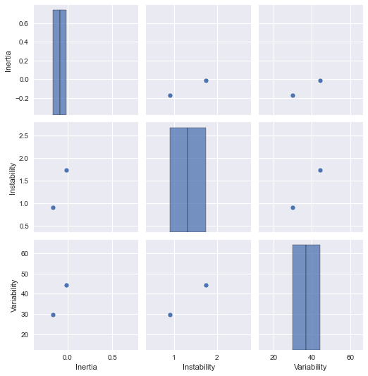
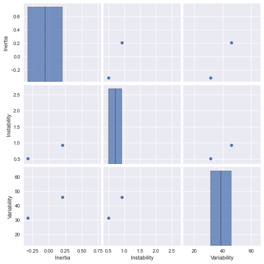
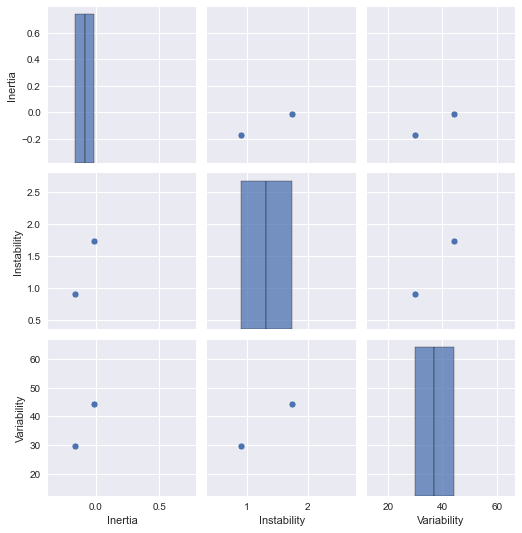
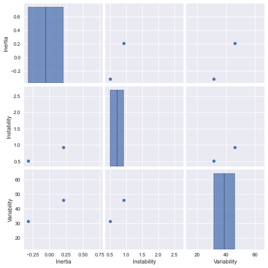
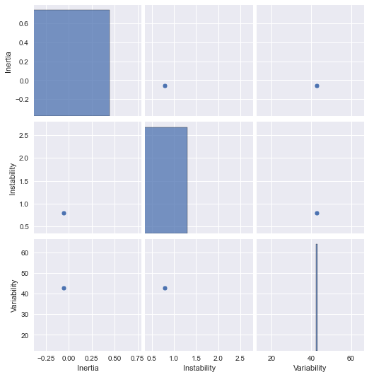
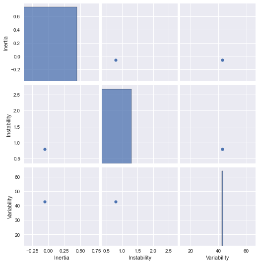

Calibrated words self-report analysis¶
Rubia Guerra
Last updated: Apr 12th 2022
Module definitions¶
import matplotlib.pyplot as plt
import matplotlib as mpl
import numpy as np
import os
import glob
import re
import pandas as pd
import scipy.io as sio
import seaborn as sns
plt.style.use("seaborn")
%matplotlib inline
Import data¶
def load_dataset(data_dir = '../EEG/data/p*'):
subject_data_files = glob.glob(os.path.join(data_dir, 'calibrated_words_calibrated_values.mat'))
subject_data_files.sort()
timestamps_data_files = glob.glob(os.path.join(data_dir, 'calibrated_words_time*.mat'))
timestamps_data_files.sort()
subjects_data = []
for subject_filename, timestamp_filename in zip(subject_data_files, timestamps_data_files):
subject_data = (sio.loadmat(subject_filename)['var'].ravel() + 10)*10
timestamp_data = sio.loadmat(timestamp_filename)['var'].ravel()
df_data = list(zip(timestamp_data, subject_data))
df = pd.DataFrame(df_data, columns=['Timestamp', 'Values'])
p_number = [p_num_map[re.findall('p\d+', subject_filename)[0]]] * df.shape[0]
df['p_number'] = p_number
subjects_data.append(df)
return subjects_data
p_num_map = {'p2': 1, 'p4': 2, 'p5': 3, 'p6': 4,
'p7': 5, 'p8': 6, 'p9': 7, 'p10': 8,
'p12': 9, 'p13': 10, 'p15': 11, 'p17': 12,
'p19': 13, 'p20': 14, 'p22': 15, 'p23': 16}
X_list = load_dataset()
X_list[0].head()
| Timestamp | Values | p_number | |
|---|---|---|---|
| 0 | 41100 | 100.0 | 8 |
| 1 | 66900 | 110.0 | 8 |
| 2 | 86833 | 185.0 | 8 |
| 3 | 109466 | 185.0 | 8 |
| 4 | 152233 | 115.0 | 8 |
X = pd.concat(X_list)
X.head()
| Timestamp | Values | p_number | |
|---|---|---|---|
| 0 | 41100 | 100.0 | 8 |
| 1 | 66900 | 110.0 | 8 |
| 2 | 86833 | 185.0 | 8 |
| 3 | 109466 | 185.0 | 8 |
| 4 | 152233 | 115.0 | 8 |
Calibrated words analyses¶
Boxplot¶
ax = X.boxplot(column='Values', by='p_number', rot=45, figsize=(15,10));
def plot_all_word_values(X, num_columns, figsize_per_row=None):
X_by_participant = iter(X.groupby('p_number'))
if figsize_per_row is None:
figsize_per_row = (25, 15/num_columns)
try:
while True:
# call plt.figure once per row
fig = plt.figure(figsize=figsize_per_row)
fig.subplots_adjust(hspace=0.4, wspace=0.4)
for col in range(num_columns):
pnum = next(X_by_participant)
series = pnum[1].Values
ax = fig.add_subplot(1, num_columns, col+1)
ax.plot(series, '-o')
plt.title(pnum[0])
plt.ylim([-10, 250])
except StopIteration:
pass
plot_all_word_values(X, 3)

Autocorrelation analysis¶
Takeaways:
Based on the plots below, there seems to be no strong effects of autocorrelation.
Idea: we could use the last significant lag (e.g. the last lag above 0.2, but have to define this threshold) as a measure for “reaction time” in the continuous annotation pass. In other words, the strong autocorrelation for small lags suggest that the participant takes some time processing their emotions and generating an annotation.
from statsmodels.graphics.tsaplots import plot_acf
def plot_autocorr(X, num_columns, lags=None, figsize_per_row=None, savefig=True, filename="plot_autocorr.png"):
X_by_participant = iter(X.groupby('p_number'))
if figsize_per_row is None:
figsize_per_row = (25, 15/num_columns)
try:
while True:
fig = plt.figure(figsize=figsize_per_row);
fig.subplots_adjust(hspace=0.4, wspace=0.1);
for col in range(num_columns):
pnum = next(X_by_participant)
series = pnum[1].Values
series = series.diff() # detrend
series[0] = 0
ax = fig.add_subplot(1, num_columns, col+1)
plot_acf(series, ax=ax, lags=lags, title=pnum[0], zero=False) # autocorr for all lags < 1 min
plt.ylim([-1.15,1.15])
if savefig:
fig.savefig(filename);
except StopIteration:
pass
Lags up to 1 min¶
Y-axis: Correlation coefficient (-1 to 1) X-axis: lag index (0 to 1 min, Fs = 30Hz)
plot_autocorr(X, 2);
<Figure size 1800x540 with 0 Axes>
Note on ACF confidence intervals¶
From statsmodels documentation:
Confidence intervals for ACF values are generally placed at 2 standard errors around r_k. The formula used for standard error depends upon the situation. If the autocorrelations are being used to test for randomness of residuals as part of the ARIMA routine, the standard errors are determined assuming the residuals are white noise. The approximate formula for any lag is that standard error of each r_k = 1/sqrt(N). See section 9.4 of [1] for more details on the 1/sqrt(N) result. For more elementary discussion, see section 5.3.2 in [2]. For the ACF of raw data, the standard error at a lag k is found as if the right model was an MA(k-1). This allows the possible interpretation that if all autocorrelations past a certain lag are within the limits, the model might be an MA of order defined by the last significant autocorrelation. In this case, a moving average model is assumed for the data and the standard errors for the confidence intervals should be generated using Bartlett’s formula. For more details on Bartlett formula result, see section 7.2 in [1].
VAR Model¶
Refer to Ernst AF, Timmerman ME, Jeronimus BF, Albers CJ. Insight into individual differences in emotion dynamics with clustering. Assessment. 2021 Jun;28(4):1186-206.
*Adapted from BioSciEconomist/ex VAR.py.
Emotion dynamics¶
Defining emotion dynamics features¶
Refer to Houben M, Van Den Noortgate W, Kuppens P. The relation between short-term emotion dynamics and psychological well-being: A meta-analysis. Psychological bulletin. 2015 Jul;141(4):901.
Emotional inertia: refers to how well the intensity of an emotional state can be predicted from the emotional state at a previous moment.
Emotional instability: refers to the magnitude of emotional changes from one moment to the next. An individual characterized by high levels of instability experiences larger emotional shifts from one moment to the next, resulting in a more unstable emotional life.
Emotional variability: refers to the range or amplitude of someone’s emotional states across time. An individual characterized by higher levels of emotional variability experiences emotions that reach more extreme levels and shows larger emotional deviations from his or her average emotional level
from statsmodels.tsa import stattools
class EmotionDynamics:
def __init__(self, Fs=30, interval=300):
self.lag = int(Fs*interval*1e-1) # feeltrace sampling rate x 300 ms
def emotional_variability(self, X):
return np.std(X)
def emotional_instability(self, X):
return np.sum((X[1:] - X[:-1])**2)/(len(X)-1) # MSSD
def emotional_inertia(self, X, lag=None):
if lag is None:
lag = self.lag
try:
return stattools.acf(X, nlags=lag)[lag] # Autocorrelation
except IndexError:
return stattools.acf(X, nlags=700)[700] # Autocorrelation
def get_parameters(self, X):
X = np.array(X)
parameters = {'Inertia':'', 'Instability':'', 'Variability':''}
parameters['Inertia'] = self.emotional_inertia(X)
parameters['Instability'] = self.emotional_instability(X)
parameters['Variability'] = self.emotional_variability(X)
return parameters
ED = EmotionDynamics(Fs=0.05)
ED.get_parameters(X_list[1]['Values'])
{'Inertia': -0.037667410714285726,
'Instability': 4309.883720930233,
'Variability': 45.1260859854213}
X_list[1].head()
| Timestamp | Values | p_number | |
|---|---|---|---|
| 0 | 103000 | 100.0 | 9 |
| 1 | 131933 | 130.0 | 9 |
| 2 | 149766 | 100.0 | 9 |
| 3 | 162933 | 130.0 | 9 |
| 4 | 217800 | 100.0 | 9 |
X_ed = []
for subject in X_list:
word_values = np.array(subject['Values'])
ed = ED.get_parameters(word_values)
ed['p_number'] = subject['p_number'][0]
X_ed.append(ed)
X_ed = pd.DataFrame(X_ed)
X_ed
| Inertia | Instability | Variability | p_number | |
|---|---|---|---|---|
| 0 | -0.058245 | 4739.166667 | 47.556309 | 8 |
| 1 | -0.037667 | 4309.883721 | 45.126086 | 9 |
| 2 | 0.042847 | 4868.750000 | 49.910073 | 10 |
| 3 | -0.182514 | 2575.000000 | 33.046305 | 11 |
| 4 | 0.240929 | 2970.967742 | 43.546121 | 12 |
| 5 | 0.205085 | 2337.096774 | 38.247434 | 13 |
| 6 | 0.079935 | 2387.777778 | 36.376685 | 1 |
| 7 | -0.060902 | 3267.307692 | 39.285613 | 14 |
| 8 | -0.079603 | 2957.500000 | 37.608064 | 15 |
| 9 | 0.009257 | 3268.243243 | 40.209157 | 16 |
| 10 | -0.032880 | 3156.875000 | 38.628326 | 2 |
| 11 | -0.202814 | 5553.260870 | 47.484921 | 3 |
| 12 | -0.005982 | 2858.333333 | 37.872801 | 4 |
| 13 | -0.091160 | 5023.076923 | 47.378793 | 5 |
| 14 | 0.077677 | 1895.714286 | 32.055062 | 6 |
| 15 | -0.221163 | 4615.425532 | 43.078049 | 7 |
max_ = pd.Series(map(lambda x: x*1.2 if x > 0 else x*0.8, X_ed.max()), ['Inertia', 'Instability', 'Variability'])
min_ = pd.Series(map(lambda x: x*1.2 if x < 0 else x*0.8, X_ed.min()), ['Inertia', 'Instability', 'Variability'])
---------------------------------------------------------------------------
ValueError Traceback (most recent call last)
/var/folders/bl/2tw1vrc12mv_hqpbdf1j3wkw0000gn/T/ipykernel_89323/1448172652.py in <module>
----> 1 max_ = pd.Series(map(lambda x: x*1.2 if x > 0 else x*0.8, X_ed.max()), ['Inertia', 'Instability', 'Variability'])
2 min_ = pd.Series(map(lambda x: x*1.2 if x < 0 else x*0.8, X_ed.min()), ['Inertia', 'Instability', 'Variability'])
~/.virtualenvs/cpsc554x/lib/python3.9/site-packages/pandas/core/series.py in __init__(self, data, index, dtype, name, copy, fastpath)
428 index = ibase.default_index(len(data))
429 elif is_list_like(data):
--> 430 com.require_length_match(data, index)
431
432 # create/copy the manager
~/.virtualenvs/cpsc554x/lib/python3.9/site-packages/pandas/core/common.py in require_length_match(data, index)
529 """
530 if len(data) != len(index):
--> 531 raise ValueError(
532 "Length of values "
533 f"({len(data)}) "
ValueError: Length of values (4) does not match length of index (3)
Pairplot analysis¶
grid = sns.pairplot(X_ed);
# x-axis limits
grid.axes[0,0].set_xlim((min_.Inertia,max_.Inertia))
grid.axes[0,1].set_xlim((min_.Instability,max_.Instability))
grid.axes[0,2].set_xlim((min_.Variability,max_.Variability))
grid.axes[1,0].set_xlim((min_.Inertia,max_.Inertia))
grid.axes[1,1].set_xlim((min_.Instability,max_.Instability))
grid.axes[1,2].set_xlim((min_.Variability,max_.Variability))
grid.axes[2,0].set_xlim((min_.Inertia,max_.Inertia))
grid.axes[2,1].set_xlim((min_.Instability,max_.Instability))
grid.axes[2,2].set_xlim((min_.Variability,max_.Variability))
# y-axis limits
grid.axes[0,0].set_ylim((min_.Inertia,max_.Inertia))
grid.axes[0,1].set_ylim((min_.Inertia,max_.Inertia))
grid.axes[0,2].set_ylim((min_.Inertia,max_.Inertia))
grid.axes[1,0].set_ylim((min_.Instability,max_.Instability))
grid.axes[1,1].set_ylim((min_.Instability,max_.Instability))
grid.axes[1,2].set_ylim((min_.Instability,max_.Instability))
grid.axes[2,0].set_ylim((min_.Variability,max_.Variability))
grid.axes[2,1].set_ylim((min_.Variability,max_.Variability))
grid.axes[2,2].set_ylim((min_.Variability,max_.Variability));
Data preprocessing: scaling¶
Standardize features by removing the mean and scaling to unit variance.
from sklearn.preprocessing import StandardScaler
scaler = StandardScaler()
X_scaled = scaler.fit_transform(X_ed[['Inertia', 'Instability', 'Variability']])
X_scaled = pd.DataFrame(X_scaled, columns={'Inertia', 'Instability', 'Variability'})
X_scaled['p_number'] = X_ed['p_number']
X_scaled.head()
| Inertia | Instability | Variability | p_number | |
|---|---|---|---|---|
| 0 | -0.303855 | 1.091102 | 1.239767 | p10 |
| 1 | -0.141110 | 0.697543 | 0.773963 | p12 |
| 2 | 0.495656 | 1.209901 | 1.690916 | p13 |
| 3 | -1.286661 | -0.892967 | -1.541383 | p15 |
| 4 | 2.062228 | -0.529951 | 0.471130 | p17 |
max_scaled = pd.Series(map(lambda x: x*1.2 if x > 0 else x*0.8, X_scaled[['Inertia', 'Instability', 'Variability']].max()),
['Inertia', 'Instability', 'Variability'])
min_scaled = pd.Series(map(lambda x: x*1.2 if x < 0 else x*0.8, X_scaled[['Inertia', 'Instability', 'Variability']].min()),
['Inertia', 'Instability', 'Variability'])
3D scatterplot¶
import numpy as np
import matplotlib.pyplot as plt
from mpl_toolkits.mplot3d import Axes3D
fig = plt.figure(figsize=(15,10))
ax = Axes3D(fig, rect=[0, 0, 0.95, 1], elev=48, azim=130, auto_add_to_figure=False, facecolor='w')
fig.add_axes(ax)
ax.scatter(X_scaled.Inertia, X_scaled.Instability, X_scaled.Variability,
cmap=plt.cm.nipy_spectral, edgecolor="k", s=100)
for (_, subject) in X_scaled.iterrows(): #plot each point + it's index as text above
label = subject['p_number']
ax.text(subject.Inertia,subject.Instability, subject.Variability, '%s' % label, size=20, zorder=1,
color='k')
ax.set_xlabel('Inertia')
ax.set_ylabel('Instability')
ax.set_zlabel('Variability')
plt.show()
Principal Component Analysis¶
import numpy as np
import matplotlib.pyplot as plt
from sklearn import decomposition
pca = decomposition.PCA(n_components=2)
pca.fit(X_scaled[['Inertia', 'Instability', 'Variability']])
X_PCA = pca.transform(X_scaled[['Inertia', 'Instability', 'Variability']])
X_PCA = pd.DataFrame(X_PCA, columns=['PC1', 'PC2'])
X_PCA['p_number'] = X_scaled['p_number']
fig = plt.figure(figsize=(15,10))
sns.scatterplot(x=X_PCA.PC1, y=X_PCA.PC2);
plt.xlabel('PC 1')
plt.ylabel('PC 2');
for (_, subject) in X_PCA.iterrows(): #plot each point + it's index as text above
label = subject['p_number']
plt.text(subject.PC1,subject.PC2, '%s' % label, size=15, zorder=1,
color='k')
Gaussian Mixture Model¶
Gaussian Mixture Models using information-theoretic criteria (BIC).
Model selection concerns both the covariance type and the number of components in the model.
Unlike Bayesian procedures, such inferences are prior-free.
*Adapted from Gaussian Mixture Model Selection
import itertools
from scipy import linalg
from sklearn import mixture
lowest_bic = np.infty
bic = []
n_components_range = range(1, 15)
cv_types = ["spherical", "tied", "diag", "full"]
for cv_type in cv_types:
for n_components in n_components_range:
# Fit a Gaussian mixture with EM
gmm = mixture.GaussianMixture(
n_components=n_components, covariance_type=cv_type
)
gmm.fit(X_scaled[['Inertia', 'Instability', 'Variability']])
bic.append(gmm.bic(X_scaled[['Inertia', 'Instability', 'Variability']]))
if bic[-1] < lowest_bic:
lowest_bic = bic[-1]
best_gmm = gmm
bic = np.array(bic)
clf = best_gmm
color_iter = itertools.cycle(['tab:blue', 'tab:orange', 'tab:green', 'tab:red', 'tab:purple', 'tab:brown', 'tab:pink', 'tab:gray', 'tab:olive', 'tab:cyan'])
bars = []
# Plot the BIC scores
plt.figure(figsize=(15, 10))
for i, (cv_type, color) in enumerate(zip(cv_types, color_iter)):
xpos = np.array(n_components_range) + 0.2 * (i - 2)
bars.append(
plt.bar(
xpos,
bic[i * len(n_components_range) : (i + 1) * len(n_components_range)],
width=0.2,
color=color,
)
)
plt.xticks(n_components_range)
plt.ylim([bic.min() * 1.01 - 0.01 * bic.max(), bic.max()])
plt.title("BIC score per model")
xpos = (
np.mod(bic.argmin(), len(n_components_range))
+ 0.65
+ 0.2 * np.floor(bic.argmin() / len(n_components_range))
)
plt.text(xpos, bic.min() * 0.97 + 0.03 * bic.max(), "*", fontsize=14)
plt.xlabel("Number of components")
plt.legend([b[0] for b in bars], cv_types);
# Plot the winner
fig = plt.figure(figsize=(15,10))
ax = Axes3D(fig, rect=[0, 0, 0.95, 1], elev=48, azim=130, auto_add_to_figure=False, facecolor='w')
fig.add_axes(ax)
Y_ = clf.predict(X_scaled[['Inertia', 'Instability', 'Variability']])
for i, (mean, color) in enumerate(zip(clf.means_, color_iter)):
if not np.any(Y_ == i):
continue
ax.scatter(X_scaled.Inertia.loc[Y_ == i], X_scaled.Instability.loc[Y_ == i],
X_scaled.Variability.loc[Y_ == i], s=100, color=color, edgecolor="k")
for (_, subject) in X_scaled.iterrows(): #plot each point + it's index as text above
label = subject['p_number']
ax.text(subject.Inertia,subject.Instability, subject.Variability, '%s' % label, size=15, zorder=1,
color='k')
plt.legend(range(len(clf.means_)))
ax.set_xlabel('Inertia')
ax.set_ylabel('Instability')
ax.set_zlabel('Variability')
plt.title(
f"Selected GMM: {best_gmm.covariance_type} model, "
f"{best_gmm.n_components} components"
)
plt.show()
Within-participant analysis¶
The main takeaway so far seems to be that there are no direct archetypes or patterns of response. This seems to suggest that personalized models make sense, given that each participant’s response is distinct.
Below is an attempt to address KM’s comment:
Is there any more evidence that it is indeed individualized? Is within-participant behavior consistent?
Each feeltrace is split in 30 sec chunks, then analyzed within participant.
participant_split = {}
n_samples = int(30*5*60) # sampling rate x n_seconds (3 min)
for index, subject in enumerate(X_list):
feeltrace = np.array(subject['Feeltrace'])
n_chunks = int(len(feeltrace)/n_samples)
participant_split[index] = np.array_split(feeltrace, n_chunks)
ed_participant = {}
grids = []
X_participant_dfs = []
for index, participant in enumerate(participant_split.items()):
ed_participant[index] = list(map(ED.get_parameters, participant[1]))
X_participant_dfs.append(pd.DataFrame(ed_participant[index]))
X_participant_dfs[index]['Participant'] = X_participant_dfs[index].shape[0] * [index]
X_participant_dfs[index]['Window'] = list(map(lambda x: x, range(X_participant_dfs[index].shape[0])))
from functools import reduce
X_participants = reduce(lambda x, y: pd.concat([x,y], ignore_index = True, sort = False), X_participant_dfs)
X_participants[['Inertia', 'Instability', 'Variability']].head()
| Inertia | Instability | Variability | |
|---|---|---|---|
| 0 | -0.006799 | 0.562249 | 24.325250 |
| 1 | 0.021048 | 0.624189 | 38.349309 |
| 2 | -0.161445 | 1.079878 | 39.644436 |
| 3 | -0.190638 | 0.983516 | 46.210123 |
| 4 | 0.327486 | 1.772766 | 54.534712 |
max_ = pd.Series(map(lambda x: x*1.2 if x > 0 else x*0.8, X_participants[['Inertia', 'Instability', 'Variability']].max()), ['Inertia', 'Instability', 'Variability'])
min_ = pd.Series(map(lambda x: x*1.2 if x < 0 else x*0.8, X_participants[['Inertia', 'Instability', 'Variability']].min()), ['Inertia', 'Instability', 'Variability'])
for index, participant in enumerate(participant_split.items()):
X_participant = pd.DataFrame(ed_participant[index])
grid = sns.pairplot(X_participant);# x-axis limits
grid.axes[0,0].set_xlim((min_.Inertia,max_.Inertia))
grid.axes[0,1].set_xlim((min_.Instability,max_.Instability))
grid.axes[0,2].set_xlim((min_.Variability,max_.Variability))
grid.axes[1,0].set_xlim((min_.Inertia,max_.Inertia))
grid.axes[1,1].set_xlim((min_.Instability,max_.Instability))
grid.axes[1,2].set_xlim((min_.Variability,max_.Variability))
grid.axes[2,0].set_xlim((min_.Inertia,max_.Inertia))
grid.axes[2,1].set_xlim((min_.Instability,max_.Instability))
grid.axes[2,2].set_xlim((min_.Variability,max_.Variability))
# y-axis limits
grid.axes[0,0].set_ylim((min_.Inertia,max_.Inertia))
grid.axes[0,1].set_ylim((min_.Inertia,max_.Inertia))
grid.axes[0,2].set_ylim((min_.Inertia,max_.Inertia))
grid.axes[1,0].set_ylim((min_.Instability,max_.Instability))
grid.axes[1,1].set_ylim((min_.Instability,max_.Instability))
grid.axes[1,2].set_ylim((min_.Instability,max_.Instability))
grid.axes[2,0].set_ylim((min_.Variability,max_.Variability))
grid.axes[2,1].set_ylim((min_.Variability,max_.Variability))
grid.axes[2,2].set_ylim((min_.Variability,max_.Variability))


 





 
